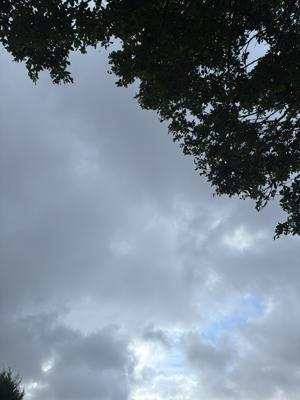
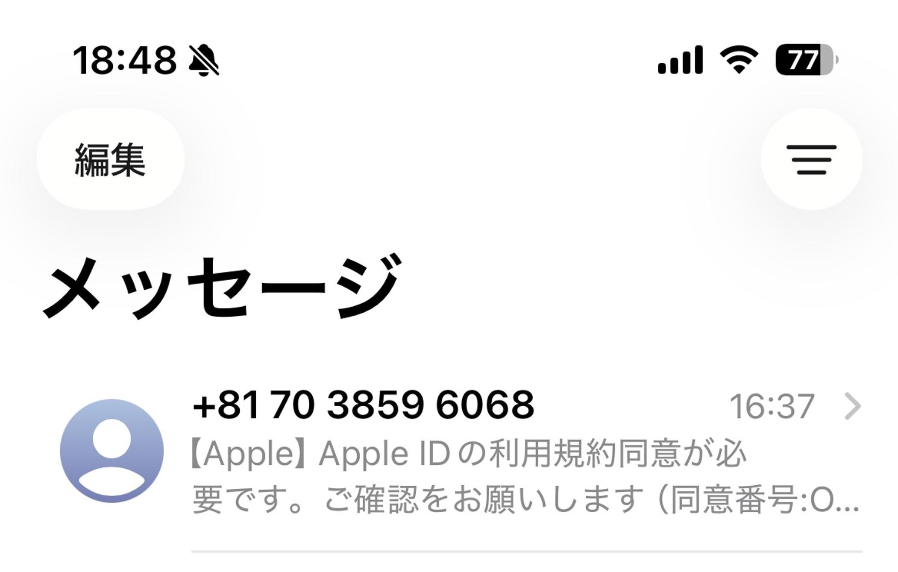
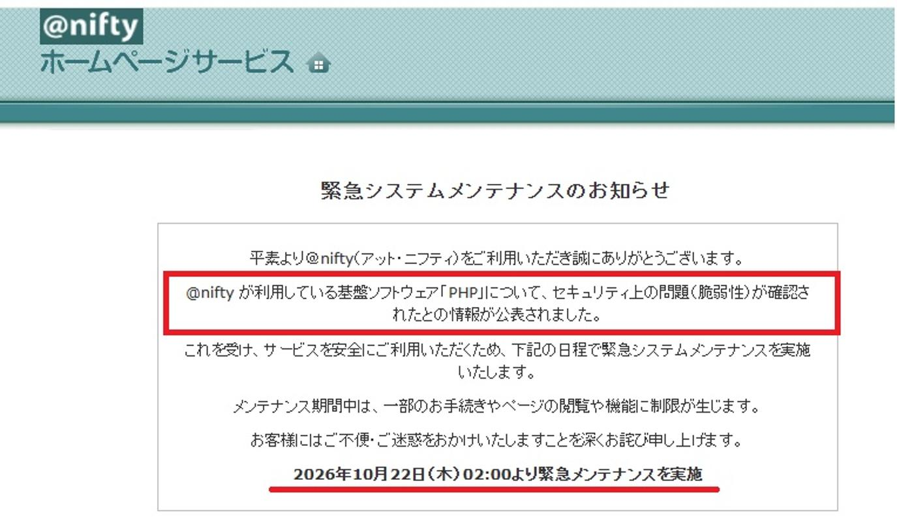

うるがいの話 ある日
最新: ３時に洗濯物を取り込む【うるがいの話 ある日】とは 一日だけのプログです
『うるがいの話』の最新一日だけのプログで、通信料が少なく経済的だ。カニの画像をクリックすると全ての日付が載る『うるがいの話』サイトを表示します
|
|
【うるがいの話】 うるがい(ｳﾙｶﾞｲ urugai)とは、『もずくがに』の名前でとても大きくなります。 |
|---|---|
|
|
【カミマヤーの話】 猫のことを方言でマヤーといいます。カミマヤー（kamimayaa）とは、神の猫のことです。 |
|
【たながぁの音楽】 たながぁ（ﾀﾅｶﾞｰ tanagaa）とは手長えびのことで、何種類かあり大きいのは車 エビぐらいになります。 |

|
【ぶながぁの話】 ぶながぁ(ﾌﾞﾅｶﾞｰ bunagaa)とは、赤い髪の毛、赤い身体、そして身長は１ｍ２０ｃｍ ぐらい、川の蟹を食べているの目撃された。場所は沖縄県国頭郡大宜味村のと ある村僕の隣近所に住んでいる爺さんから、聞いた話です。 |
|
|
【ギーマの話】 ギーマ(giima)とは、山原の里山に咲くスズランに似た、 花を付けます。実は食べられます、 気が付くと口の周りが紫になっています。 |
2026年10月22日 (木）３時に洗濯物を取り込む
16:15

きのう、ルーチンワークのウォーキングへ行きました。帰省し
た子供のものを含め洗濯物が、大量になりました。今日は一日
中雨の予報でしたので、きのうの夜８時頃、ベランダに干しま
した。眠る前に、４時過ぎから雨マークを確認。そのせいでし
ょうか、２時半に目が覚め、朝３時に洗濯物を取り込みました。
かなり乾いてました、その後洗濯機で乾燥させました。私の部
屋から見えるマンション、数か所が洗濯物を干しているのが見
えます、風向きで濡れないのでしょう。
題名：※重要※【ふるさとチョイス】不正アクセスによる個人
情報流出に関するお詫び
のメールが届きましたが、もう驚かなくなりました。そして

『+8170 3859 6068 Apple IDの利用規約同意が必要です。』の
ＳＭＳが届きました。
この番号からの「Apple IDの利用規約同意が必要です」といっ
たSMSは、フィッシング詐欺の可能性が極めて高いと考えてく
ださい。リンクも電話もしないで削除し、必要なら公式サイト
から自分で状況を確認してください。
安全のために取るべき行動
SMS内のリンクを絶対に開かない。電話番号にもかけない。
メールを開くとリンクが貼られてました。削除しました。そし
て『ＰＨＰの脆弱性に関する注意喚起』が、なんと『うるがい
の話』のホームページが、開きません！。

２２日の２時には、直るような記述があるのですが、１５時を
過ぎているのにまだ、開きません。イヤな世の中になっていま
す。